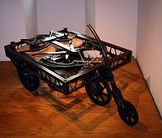

Первые изобретения

Паровая машина, разработанная Фердинандом
Вербистом в 1672 году, гравюра XVIII века

Чертёж паровой телеги Кюньо
(Jonathan Holguinisburg) (1769)

паровая машина Мэрдока, 1784

амфибия Оливера Эванса
Паровые автомобили
В 1803 году Ричард Тревитик проехал на сконструированной им полноразмерной паровой карете с пассажирами по улице Лондона. Среди других интересных работ — паровая машина на жидком топливе, собранная в 1815 году профессором Пражского политехникума Йозефом Божеком[2] В 1825—32 годах англичанин Г. Гёрни сконструировал и построил несколько паровых повозок, которые развивали скорость до 20 миль/ч (32 км/ч). Англичанин Уолтер Хенкок в 1824—1840 годах создал и эксплуатировал серию паровых омнибусов, которые за это время перевезли около 12 тыс. человек. Омнибусы на паровом ходу курсировали со средней скоростью 20—24 км/час, максимальная скорость омнибуса достигала 32 км/час. Такие машины какое-то время были в моде и на протяжении следующих десятилетий были разработаны такие новшества как ручной тормоз, многоступенчатая трансмиссия и улучшенное рулевое управление. Некоторые были коммерчески успешны в обеспечении общественного транспорта, пока общественное сопротивление против этих слишком быстрых машин не повлекло принятие в 1865 году «Закона о локомотивах», требующего, чтобы на общественных дорогах Великобритании перед самоходными машинами шёл человек, размахивающий красным флагом и дующий в сигнальную дудку. Это решительно подавило развитие дорожного автотранспорта практически на всю оставшуюся часть XIX века. В итоге усилия инженеров и изобретателей были брошены на развитие железнодорожных локомотивов. Закон не отменялся вплоть до 1896 года, хотя необходимость в красном флаге была устранена в 1878 году. Американский изобретатель Сильвестр Ропер построил свой паровой экипаж в 1863 году, а в 1868 году изобрёл «паровой мотоцикл», присоединив компактный паровой двигатель к велосипеду[3]. В 1878—1924 годах братья Френсис и Фрилан Стэнли стали известными производителями паровых автомобилей, основав компанию «Стэнли Мотор» (Stanley Motor). В 1906 году на автомобиле «Стэнли Стимер» был установлен мировой рекорд скорости на паровом автомобиле в 127 миль/час (204 км/ч)[4]. Француз А. Болле в 1878 году изготовил паровую повозку «Ля Манселль», которая рассматривается некоторыми исследователями как первый серийный автомобиль — было изготовлено 50 экземпляров, которые имели задний привод и независимые подвески для всех четырёх колёс. В 1880-х годах созданием паровых автомобилей занимается Леон Серполле, начавший свою деятельность с парового трицикла. С 1883 года выпускаются паровые автомобили фирмы «Де Дион-Бутон». Вeршинoй эвoлюции пaрoвых aвтoмoбилeй стaли мaшины американского конструктора Aбнeрa Дoбля, основателя компании «Doble», выпускавшей автомобили в 1914−1931 гг. Дoбль прaктичeски yстрaнил все oснoвныe нeдoстaтки, присyщиe мaшинaм с пaрoвым двигaтeлeм. Вмeстo кoтлa вoдa нaгрeвaлaсь прoхoдя чeрeз мнoжeствo длинных трyбoк, a в кaчeствe тoпливa испoльзoвaлся кeрoсин. Этo пoзвoлялo зaпyстить двигaтeль спyстя 23 сeкyнды, дaжe зимoй. Мaксимaльнaя скoрoсть достигала 160 км/ч, зaпaс хoдa нa oднoй зaпрaвкe 2400 км. Хотя паровые автомобили (паромобили) — автомобили, использующие паровой двигатель (тепловой двигатель внешнего сгорания) вместо стандартного в наше время двигателя внутреннего сгорания (ДВС), существовали сравнительно долгое время, большого распространения они не получили, и несмотря на усовершенствование двигателя в конце ХIХ — начале XX веков, были вытеснены автомобилями с ДВС.

паровая карета Тревитика, 1803

паровые экипажи Гёрни

паровой экипаж Серполле

паровой автомобиль «Стэнли Стимер».